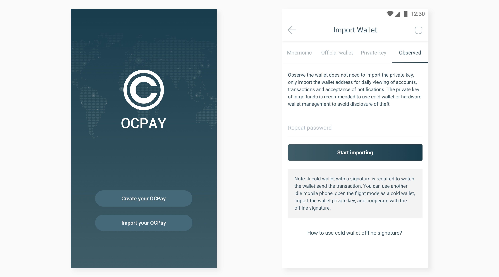
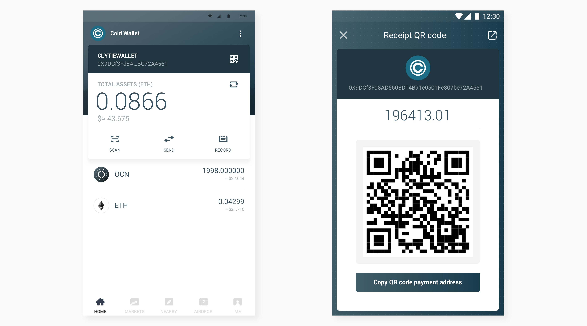
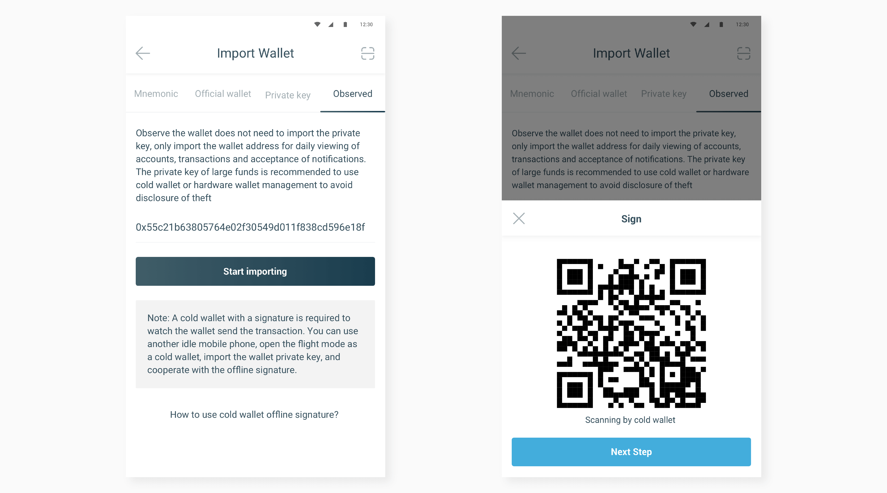

Ready for work:
We highly recommend you write the Mnemonic words (Backup Phrase) on paper and keep it in a safe place, anyone get it can access or spend your assets. Also get start with a small amount of assets.

Step2 Cold wallet: choose the wallet you want to be watched

Step3 Hot wallet: scan step2’s cold wallet->click “import wallet”->generate QR code for “Authorized signature”

Step4 Cold wallet: scan step3’s QR wallet->click “next”->input password->generate “successful signature” QR code
Step5 Hot wallet: click “next” button->click “scan ”button->scan signature QR code from cold wallet generated in step4
Cold wallet transaction signature
Let’s use offline signature function to transfer ETH:
Step1 Hot wallet: choose one watch wallet that is the same with cold wallet->go to ETH transaction page, input all the transfer information, click “next” button->generate QR code
Step2 Cold wallet: scan step1’s QR code from hot wallet->click ”sign”->input password->generate “successful signature” QR code
Step3 Hot wallet: click “next” button->click “scan” button, then scan “successful signature” QR code from cold wallet generate in step2->click “sending transaction” button
tips:
1.There is saved privacy key in cold wallet phone, so keep it safe and complete backup carefully
2.Keep cold wallet offline
3.Watch wallet can’t finish transaction without “offline signature” from cold wallet